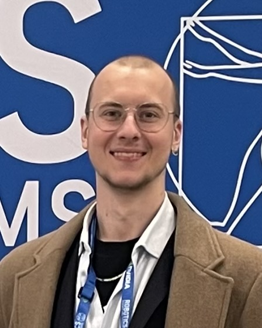

Mechatronics Engineer
Final-year Mechatronics Engineering student at UTS, focused on robotics perception and embedded systems.
My curiosity about the physical world started early – as a kid I was constantly taking apart old electronics and fixing things with my hands, whether that was a broken circuit or a bicycle in need of tuning. Physics felt like the language underneath everything, and engineering felt like the natural way to speak it. That instinct led me to Mechatronics at UTS, where I found a field that sits exactly at the sweet spot – building intelligent systems to solve specific problems.
Since then I’ve worked to turn that foundation into real capability. I compiled a real-time RGBD inference pipeline on a Jetson Orin Nano, built a physically-constrained graph tracking system using ARAP deformation modelling for my capstone. As a recognition of my efforts, I attended RSS 2026 in Sydney as part of the Pathways Fellowship, allowing me to engage with cutting-edge research across perception, sim-to-real transfer, and robot foundation models.
My goal is to contribute to robotics and automation: systems that sense, reason, and act reliably in the real world.